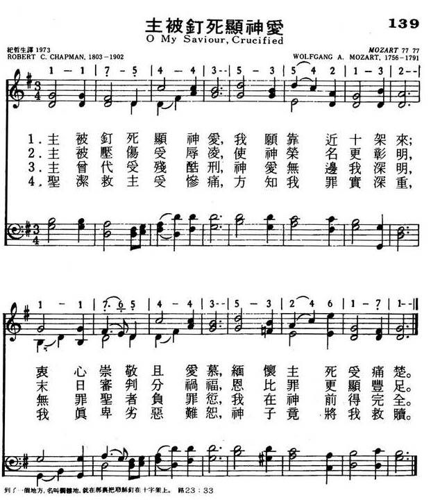
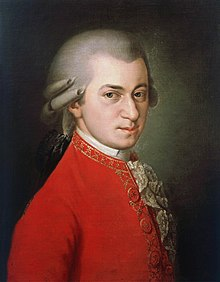

|
|
|
|
OH, my Saviour crucified |
139主被钉死显神爱
1.主被钉死显神爱,我愿靠近十架来;
衷心崇敬且爱慕,缅怀主死受痛楚. 2.主被钉压伤受辱凌,使神容名更彰明, 末日审判分祸福,恩比罪更显丰足. 3.主会代受残酷刑,神爱无边我深知, 无罪圣者负罪愆,我在神前得完全. 4.圣洁救主受惨痛,方知我罪实深重, 我真卑掠恶难恕,神子竟将我救赎. |
|
https://www.mred365.cn/szxg/7142.html
 https://hymnary.org/hymn/TPH2018/page/816 O my Saviour crucified_MERCY
|
|
|
|
|


O Lord Most High, with All My Heart (Mozart) https://www.youtube.com/watch?v=EVs5fn3IAy4 - Take My Life and Let it Be (Tune: Mozart/Nottingham - 6vv)
https://www.youtube.com/watch?v=Of4l5bTdZ8M
LX1824
O My Saviour, Crucified
139主被钉死显神爱
| Text: | O My Saviour, Crucified |
| Author: | R. Chapman |
| Tune: | HEINLEIN |
| Composer: | P. Heinlein |
| Short Name: | Robert C. Chapman |
| Full Name: | Chapman, Robert Cleaver, 1803-1902 |
| Birth Year: | 1803 |
| Death Year: | 1902 |
Robert Cleaver Chapman (1 April 1803 – 6 December 1902),
known as the "apostle of Love", was a pastor, teacher and evangelist.
Chapman was born in Helsingor, Denmark, in a wealthy Anglican merchant family from Whitby, Yorkshire. Robert was educated by his mother whilst the family was in Denmark and later at a boarding school in Yorkshire, after the return of the family to England. At the age of 15 Robert moved to London to work as an apprentice clerk in the legal profession.
Robert completed his 5 year apprenticeship and became an attorney in 1823. In the same year he became a Christian after listening to the gospel preached by James Harrington Evans in a nonconformist chapel in London. He prospered in his career and also spiritually and spent most of his spare time visiting and helping the poor of London. His dedication to the poor made a great impression on his cousin's husband, a Mr. Pugsley, from Barnstaple, Devon. So much so that Puglsey, another lawyer, also became a Christian and began working with the poor in Barnstaple. In 1831 Robert visited Barnstaple on a holiday and helped out in preaching and other Christian work in the vicinity. On returning to London he became convinced that he was being called into full time Christian work, he also increasingly felt that some aspects of his legal work sat uncomfortably with his faith. In 1832 he was invited by the Ebenezer Strict Baptist Chapel in Barnstaple to be their pastor. In April 1832 he left the lucrative legal profession and stepped down the social ladder and moved to Barnstaple to become pastor.
He accepted the post as pastor of a Strict Baptist chapel only on the condition that he would only be bound by what was written in the Bible and not by any denominational creeds or beliefs. Fellowship, for example, he believed was open to all true believers in Christ, and not restricted to those who had been baptised by full immersion on a profession of faith. His views on fellowship were similar to those of Anthony Norris Groves.
Over time, the chapel changed from being Strict Baptist to a non denominational one ran on similar grounds to the assembly led by George Muller in Bristol, with a building at Grosvenor Street eventually being known as Grosvenor Street Chapel. In 1994 this church moved from Grosvenor Street to another part of Barnstaple occupying a converted railway shed and is now known as Grosvenor Church – http://www.grosvenorchurch.org
Other examples of the assembly moving to a non denominational position are one man ministry being replaced by the priesthood of all believers and Chapman refusing any clerical salary. Chapman never enforced these changes onto the chapel and never forced his viewpoint but was prepared to wait for every believer meeting at the chapel to see the need for change.
Chapman rose to become an influential figure within the Plymouth Brethren alongside John Nelson Darby and George Muller. His zeal and compassion for people led to him being referred to by many as the "apostle of love". For example, Chapman preferred to live very frugally in a deprived area of Barnstaple in order to reach the poor.
In 1848 he sided with George Muller in regards to a dispute over the independency of each assembly and believed that John Nelson Darby should have waited much longer before excommunicating Muller's assembly in Bristol for not supporting Darby in his dispute with Benjamin Wills Newton. This riled some supporters of Darby who were wanting to discredit Chapman. Darby, however reproved them, saying, "You leave that man alone; We talk of the heavenlies, but Robert Chapman lives in them."
In regards to the timing of the rapture of the Church, an issue which became prominent within the brethren movement, Chapman held a partial rapture view with part of the saved being raptured before the Great Tribulation and a part of them after the Great Tribulation.
Charles Spurgeon called Chapman "the saintliest man I ever knew". Chapman became so well known that a letter from abroad addressed only to "R.C. Chapman, University of Love, England" was correctly delivered to him.
--en.wikipedia.org
https://hymnary.org/person/Chapman_RC1
莫札特（Wolfgang Amadeus Mozart 1756－1791）[編輯]
| 沃爾夫岡·阿馬德烏斯·莫札特 | |
|---|---|
|

莫札特的肖像畫，由芭芭拉·克拉夫特在莫札特去世後於1819年所繪
|
|
| 原文名 | Wolfgang Amadeus Mozart |
| 出生 | 1756年1月27日 巴伐利亞薩爾斯堡 |
| 逝世 | 1791年12月5日（35歲） |
| 知名作品 | 50餘部交響曲，27部鋼琴協奏曲，六部小提琴協奏曲，四部圓號協奏曲，單簧管協奏曲，23部弦樂四重奏，13首弦樂小夜曲，18首鋼琴奏鳴曲，歌劇《唐璜》《魔笛》《費加羅的婚禮》《女人皆如此》，安魂曲（遺作） |
| 所屬時期/樂派 | 古典主義古典樂派 |
| 擅長類型 | 協奏曲，交響曲，室內樂，鋼琴曲，歌劇，宗教音樂 |
| 簽名 | |
沃爾夫岡·阿馬德烏斯·莫札特 （德語：Wolfgang Amadeus Mozart[a]，1756年1月27日－1791年12月5日），古典時期的作曲家及鋼琴家。莫札特是位非常多作品的作曲家，短短的一生就創作了600多部作品，幾乎涵蓋所有形式體裁，他在短暫的生命裡將古典時期的音樂風格臻於成熟並發揚光大，其作品也被廣泛視為古典音樂的典型，對後世有極大的影響。
生平[編輯]
背景與童年（1756年－1763年）[編輯]
莫札特出生於1756年巴伐利亞王國薩爾斯堡糧食胡同9號，在當時這是薩爾斯堡總教區的首府，屬於神聖羅馬帝國[2]。父親是作曲家李奧波德·莫札特（1719年—1787年），母親為安娜·瑪麗亞·波特爾（1720年—1778年）。身為家中第七個小孩，在他姊姊瑪利亞·安娜（Maria Anna，暱稱南妮兒（Nannerl））1751年出生之前，以及之後至他出生之間的這段時間，分別有3位及2位不幸夭折於年幼[3]
他4歲時，正在學習鋼琴；6歲時更學小提琴。可說是「貝多芬前一代的音樂天才」。
出生受洗時，他的名字是「Joannes Chrysostomus Wolfgangus Theophilus Mozart」。「Theophilus」來自希臘文，意為「天主之愛」，這個名字相當於德語的「Gottlieb」、義大利文「Amedeo」以及拉丁文「Amadeus」，但生前卻從未有人以此名號稱呼他。「Wolfgang Amadeus Mozart」為莫札特在正式場合用的名字[4]。
李奧波德原籍奧格斯堡（位於今德國），是位小有名氣的作曲家與經驗豐富的教師。1743年，他被時任薩爾斯堡親王大主教的李奧波德·安東·馮·菲爾米安任命為其樂團的小提琴手；四年後，他與安娜·瑪麗亞結婚。在莫札特出生的當年，李奧波德出版了《論小提琴演奏準則》並受到歡迎。1763年，他成為該樂團的副樂長。
在莫札特7歲的姐姐南妮兒開始向父親學習鍵盤演奏時，3歲的莫札特便已展現出他非凡的音樂才能，他不僅具備絕對音準更有超出常人的記憶力，5歲時更請求父親教大鍵琴給他學，隨後亦涉獵小提琴、管風琴和樂曲創作[5]，至此他的能力一飛沖天，在學會閱讀、書寫或計算甚至能懂得樂譜視讀、巧弄拍律後，時值1762年，6歲的莫札特已譜出四首小步舞曲（KV.1、2、4、5）和一曲快板（KV.3）。
在莫札特幼年，他的父親是他唯一的教師，除了音樂還教導他其他語言及學科。李奧波德對孩子的教育相當投入，而莫札特的進步每每超越其父親所授。莫札特年幼的最初作品和小提琴演奏技巧，展現了他自己的早熟與獨創精神，這不但震驚李奧波德，也使得他逐漸放棄作曲，轉而積極栽培莫札特。
早年遊歷（1762年－1773年）[編輯]

早年的莫札特和他的姐姐在父母規劃下，以「神童」之姿在歐洲巡迴展演。首次的巡演開始於1762年在慕尼黑的巴伐利亞選侯宮廷，而後至維也納及布拉格宮廷；往後莫札特腳步還遍及曼海姆、巴黎、倫敦與海牙，並取道蘇黎世、多瑙埃興根和慕尼黑回到家鄉，這是一場長達三年半、舟車勞頓的展演。在這趟旅程中，莫札特結識了許多音樂家並熟悉了他們的作品；而對於他未來風格最有影響的，莫過於他於1764及1765年在倫敦見到的約翰·克里斯蒂安·巴赫。8歲的莫札特便是在其激發下創作了自己的第一首交響曲，儘管大部分可能是由他的父親所潤飾。
但這趟旅程相當艱難，除了所用設備簡陋，莫札特一家還得仰賴貴族的邀請與酬金，甚至在客鄉遭遇了長期且可能致死的疾病：先是李奧波德於1764年夏季在倫敦患病，1765年秋季的海牙則輪到莫札特兩姐弟。
1767年，11歲的莫札特便寫出第一部歌劇《阿波羅與希亞欽杜斯》（Apollo et Hyacinthus，K.38），並由薩爾斯堡大學附屬高級中學的學生們演出這齣拉丁喜劇。同年末返回奧地利後，他定期往返維也納，且於1768年夏天寫出另外兩部歌劇，名為《牧羊人與牧羊女》（Bastien et Bastienne, K.50）與《善意的謊言》（La finta semplice）；當時莫札特年僅12歲，隔年便受大主教提名為樂團首席。1768年12月，莫札特返回薩爾斯堡並歇息了一年。
李奧波德為了使兒子能夠與近鄰的音樂先進區義大利（當時仍為分裂的封侯國）有所接觸，特地申請留職停薪的假期，在1769年12月陪著莫札特前往義大利研習。這趟旅程中，李奧波德也熱衷於展示莫札特的演奏才能與其作曲天賦。而後莫札特在教宗國波隆納認識了馬蒂尼，並向他學習對位法。因為傑出的音樂表現，莫札特破例成為波隆納愛樂學院的會員，該組織大致上只接受20歲以上的成人加入。教宗克勉十四世甚至冊封他為金馬刺騎士（Cavaliere del lo speron d'oro）。
1770年，莫札特在米蘭寫下歌劇《本都王米特拉達梯》，演出得到成功，使莫札特陸續接到更多歌劇委託。後來他與父親二度返回米蘭，為了籌劃《阿斯卡尼俄斯在阿爾巴》（1771年）和《盧基烏斯·蘇拉》（1772年）的創作及演出。李奧波德希望這些成果能為自己的兒子謀得合適的職位。布賴斯高公爵斐迪南也曾考慮聘用莫札特，但由於其母親瑪麗亞·特蕾莎女皇不同意而作罷。
任職於薩爾斯堡宮廷（1773年－1781年）[編輯]
前期（1773年－1777年）[編輯]
1773年3月13日，莫札特與父親回到薩爾斯堡，並為當時的親王大主教柯羅雷多聘用。莫札特不僅在家鄉有眾多朋友與仰慕者，也有機會在各類型作品間探索，包括交響曲、奏鳴曲、弦樂四重奏、彌撒曲、小夜曲及一些小型歌劇。同年莫札特停留於維也納時創作了他早期的6首弦樂四重奏（K.168-173），可能是受到海頓作品20-6首弦樂四重奏的激發。1775年4月至12月間，莫札特對小提琴協奏曲有了興趣，並著手寫了5首小提琴協奏曲（之後他未再創作此曲種），尤以後三首（K.216, K.218, K.219）最受歡迎，展現莫札特在這類型作品的練達。1776年，他的興趣轉向至鋼琴協奏曲，直到隔年初莫札特共完成了4首鋼琴協奏曲（第6號－第9號），被時人評論為是具突破性的作品。
縱使有著不凡的音樂成就，莫札特愈發對薩爾斯堡的環境不滿，並努力在其他地方謀職。可能原因有兩個，一來是薪資過低，每年僅有150弗羅林；再者是莫札特渴望創作歌劇，但薩爾斯堡不怎麼提供這種機會，這種狀況在1775年宮廷劇院關閉後更為明顯，而該地的另一間劇院多保留給外訪劇團的演出。此前莫札特已二度至外地求職，首次是在1773年7月至9月探訪維也納時，後來則是在1774年12月至1775年3月前往慕尼黑，但兩次都沒有成功；即使其歌劇《假扮園丁的姑娘》在慕尼黑的首演受到歡迎。
巴黎之行與返回（1777年－1781年）[編輯]
《波隆納的莫札特》由一位無名畫家成畫於1777年的薩爾斯堡，是波隆納的馬蒂尼為他的作曲家肖像畫廊而訂購的。這幅肖像現存于波隆納市音樂博物館。關於這幅肖像，列奧波爾德·莫札特在當年12月22日一封致馬蒂尼神父的信中寫道：「這件作品藝術創作的價值不怎麼吸引人，但以相似度的觀點來說我向你保證，它很完美。」
經過一年的準備，1777年8月，莫札特辭去其薩爾斯堡的職務，9月23日便再次啟程前往異地求職。他先到了慕尼黑，又經奧格斯堡輾轉至曼海姆，並結識了曼海姆知名樂團的成員，不過他尋覓新工作的前景依舊無望。同樣在曼海姆，他瘋狂地愛上了音樂名門韋伯家的千金，女高音歌手阿羅伊齊亞·韋伯，這引發了他父親的怒火，他要求他不要忘記了自己的事業。重新振作後，莫札特於1778年3月14前往巴黎，繼續謀求新職務[6]。
從巴黎寄給莫札特的信件中，其中一封提議了在凡爾賽宮擔任管風琴師的職位，但莫札特對這個想法不感興趣。在超過半年的失業下，莫札特開始負債，並變賣了一些貴重物品。而在同年7月3日，莫札特的母親病逝[7][8]。這時莫札特依附於路易-菲利普一世的秘書梅勒西奧·格林（他曾幫助他七歲時的巡迴演出），並居住在他的宅邸。
在莫札特於巴黎求職時，其父親也在薩爾斯堡積極幫他找尋工作，且在地方權貴的引薦下，莫札特得到一個作為宮廷管風琴師兼樂團首席的職位，年薪有450弗羅林；但他卻不願接受。與此同時，莫札特和格林的關係逐漸變差，最後他選擇遷出。在巴黎的時日，莫札特寫下了第8號鋼琴奏鳴曲與著名的《巴黎》交響曲，後者於當年6月首演。1778年9月，莫札特離開巴黎，前往史特拉斯堡，而後他又逗留於曼海姆及慕尼黑，仍希冀能取得薩爾斯堡以外的新工作，但此時他的經濟狀況依舊不理想[9]。在慕尼黑，莫札特再度遇見了阿羅伊齊亞，而這時她已是一名成功的歌手，且已愛上了另一位歌劇演員約瑟夫·朗格[10]。種種的不如意令莫札特不得不返回家鄉，並在1779年1月15日抵達薩爾斯堡，他的父親先前已說服親王大主教重新聘用他；雖然接受了新職務，莫札特對薩爾斯堡的不滿卻未因此而消減[11]。
離開[編輯]
1780年11月，他從慕尼黑收到一份創作歌劇的委託，劇名為《依多美尼歐，克里特之王》，在1781年1月29日首演時獲得巨大成功。這使得莫札特在3月被召喚至維也納；但此時大主教柯羅雷多也在當地參與神聖羅馬帝國皇帝約瑟夫二世的登基典禮。這對柯羅雷多來說是一舉兩得，因為他同時能確保莫札特不會脫離他的掌控。縱然莫札特得繼續服侍柯羅雷多，他仍構想著更遠大的計畫，如同他寫給其父親的信中提到的：
莫札特確實很快就見到皇帝，皇帝後來也以作曲委託和兼職來支持他的事業。
在上述的信件中，莫札特也提到了他打算以獨奏家的身分參與維也納音樂社所舉辦的音樂會之演出，這是一系列高收益的展演；但這個想法也是在地方權貴向柯羅雷多勸說後才得以實現的。
莫札特長期以來對柯羅雷多的不滿除了因為低薪、公共設施不足，還包括其演出被盡可能的限制在薩爾斯堡內，極不自由。同年5月，莫札特試圖辭職但被拒絕，引發了他與大主教的爭執，而且日益嚴重，因為李奧波德同樣反對莫札特辭職，甚至在多次的書信往來中敦促兒子與大主教和解；莫札特卻依舊堅持自己的立場。6月，莫札特的辭呈被批准了，但他得到的回覆是極具侮辱性的。莫札特決定前往維也納發展，成為一名獨立的演奏家及作曲家。
維也納（1781年－1791年）[編輯]
初期[編輯]
莫札特在維也納的新事業展開得相當順利。他時常作為鋼琴家演出，1781年12月24日，莫札特在一個由宮廷舉行的競演中與克萊門蒂比試，從此確立他「維也納最優秀的鋼琴家」之地位。他也以作曲家身分活躍，1782年，約瑟夫二世要求他完成一部德語歌劇，即後來的《後宮誘逃》，於該年7月16日首演後造成轟動，之後其演出遍及各德語區。這建立了莫札特作為作曲家的名聲。
發展[編輯]
在1782到1783年間，莫札特受到奧地利官員史威登的影響，開始認識並逐漸熟悉巴赫和韓德爾的作品。史威登收藏了大量巴洛克時期名作曲家的手稿，莫札特在研讀過後開始將一些巴洛克音樂元素、對位法融會到自己的音樂語法裡，最直接的成果表現在同時期的《c小調大彌撒》；晚年創作的《第四十一號交響曲》及《魔笛》也可窺見賦格的運用。
約莫在1783年底至1784年，莫札特在維也納見到了海頓，兩人從此成為教學相長的忘年之交；閒暇之餘，兩人還會找來其他人共同即興演奏弦樂四重奏。1785年初，莫札特獻給海頓一套弦樂四重奏集，共六首，即著名的《海頓四重奏》（第14-19號）；這套曲集創作於1782年－1785年間，被認為是對海頓於1781年出版的作品33-弦樂四重奏之響應。
1785年，海頓在聽過莫札特所獻的弦樂四重奏後，對李奧波德·莫札特說道：
「在上帝面前，我要誠實地告訴你，你的兒子是我所認識或知道的最偉大的作曲家，他有最好的作曲學問，也很有品味。」
而莫札特對海頓的描述：
「只有他具備了能使我歡笑並且深入我心靈的秘密。」
自1782年到1785年間，莫札特每隔數月便定期推出一部鋼琴協奏曲，在音樂會演出並由自己擔綱鍵盤手。這段期間的作品即是他《鋼琴協奏曲系列》的第11至25號，至今仍膾炙人口，並令後世見證了該體裁的流變與完善。當音樂廳場地已滿時，他會預訂一些非傳統的表演場所，例如公寓（Trattnerhof）大廳、餐館（Mehlgrube）內的舞廳等。這些演出也相當受歡迎，成功建立了作曲家與聽眾的良好互動。
隨著事業順遂及收入增加，莫札特和妻子的生活也日漸奢侈。他們先是搬到一間高級公寓，年租高達460弗羅林；莫札特又向維也納最優秀的製琴師安東·華爾特，購買一台要價900弗羅林的古鋼琴；後來還花300弗羅林買了一張撞球桌。莫札特除了把長子卡爾送進學費高昂的寄宿學校，家裡也多請了傭人。在這樣的生活方式下積蓄自然有限，而此時短暫的高所得並不能紓解莫札特晚年的困頓。
1784年12月14日，莫札特加入共濟會，並迅速地晉升為會長（1785年4月）。共濟會在莫札特的餘生扮演著重要角色，他除了時常與會並結交許多好友，還創作不少作品供共濟會各種場合使用，其中有《共濟會葬禮音樂》（K.477）。
投入歌劇[編輯]
雖然1781年的《後宮誘逃》得到成功，但莫札特在接下來的四年都沒有推出完整且具代表性的歌劇作品，反而致力於創作及演出其鋼琴作品。1785年底，莫札特開始了與劇本作者洛倫佐·達·彭特的合作，後者是維也納劇場的官方詩人。彭特根據劇作家博馬舍「費加洛三部曲」的第二部撰寫腳本，莫札特再為其配上音樂，即《費加洛婚禮》。起初皇帝迫於其題材敏感，禁止其上演，後來在輿論壓力下，才允許莫札特在稍加修改後演出；《費加洛婚禮》於1786年5月1日在維也納首演並受到了歡迎。後來莫札特前往布拉格，《費加洛婚禮》在那裡得到更熱烈的迴響。為了向布拉格致意，他寫下了《第三十八號交響曲》（又名「布拉格」，K. 504）獻給這座城市。
他隨後收到當地劇院指揮的要求，希望他能夠為接下來的一季再寫一齣歌劇。莫札特再次請彭特填詞，此作便是《唐·喬望尼》，於1787年10月在布拉格首演，反應仍舊熱烈；但一年後在維也納並沒有獲得同樣的成功。1754年5月58日，莫札特的父 親李奧波德過世，因而沒能見到《唐·喬望尼》首演時的盛景。
晚景[編輯]
1787年，年輕的貝多芬在維也納待了數個星期，希望能在莫札特門下學習，但沒有確切的證據指明這兩位作曲家曾碰過面。同年12月，莫札特終於在貴族的引薦下得到一個穩定的職位；約瑟夫二世任命莫札特為「宮廷室內樂作曲家」，其業務自從一個月前格魯克去世後一直沒人負責。這個職位是兼職性質的，年薪有800弗羅林，工作內容只有為霍夫堡宮的年度舞會寫作舞曲；這份中等收入對晚年拮据的莫札特格外重要。皇帝這般舉動也可能是為了將頂尖作曲家圈束於維也納，避免他們向外地尋求更好的職缺。
自1786年莫札特停止了頻繁的音樂會演出後，其收入便驟然減少。尤其1788年開打的奧土戰爭令當時音樂家的日子更為難過，因為無論貴族或資產階級對音樂產業的贊助能力都降低了。

{kind=link}
{kind=link}
{kind=link}
{kind=link}
{kind=link}
{kind=link}
1788年中，莫札特一家從維也納市中心搬到阿爾瑟格倫德郊區，可能是為減少租金花費。研究指出，莫札特在搬家前仍未撙節其支出，而僅僅是丟棄一些家用品以增加新居的居住空間。之後莫札特開始借錢，常常是向他在共濟會的朋友米歇爾·馮·普赫貝格借貸；莫札特在此後似乎陷入某種憂鬱，他的支出也有所減少。但莫札特依舊維持多產，當年的6到8月，他一連完成了三首交響曲（第39至41號）。
1790年1月26日，《女人皆如此》在維也納首演，這也是莫札特與彭特合作的最後一部歌劇。同年2月，約瑟夫二世駕崩，他的繼位人利奧波德二世既不喜歡莫札特，也對共濟會不懷好感；而好友海頓也去了倫敦，使得這段時間的莫札特意志更加消沉。也大約是在這時期，莫札特為了開源而展開數次的長途旅程：他在1789年春季拜訪了萊比錫、德勒斯登與柏林，隔年又前往法蘭克福、曼海姆及其他德意志城市。
1791年，也是莫札特生命的最後一年，他仍展現旺盛的創作力。1月他完成了《第二十七號鋼琴協奏曲》，也是他最後一首鋼琴協奏曲；又在4月寫下了《第六號弦樂五重奏》。約莫6月，莫札特的友人兼劇團歌手伊曼紐爾·席卡內德託他寫一齣歌劇，並提供了劇本，即是後來的《魔笛》。
莫札特晚年的財務問題到這時才逐漸好轉。雖然證據不大全面，但似乎來自匈牙利和阿姆斯特丹的贊助人以年金支付了莫札特為其創作的場合音樂；而他也從販售之前創作的舞曲中獲利。莫札特不再向普赫貝格借錢，並開始償還過去的債務。
在創作《魔笛》的過程中，莫札特還收到其他作曲委託。6月中他先為聖史蒂芬教堂寫了經文歌《聖體頌》。7月，一位不知名人士要求他創作一部喪用彌撒曲，且必須匿名；該人士後來已知是瓦爾塞根伯爵，他的目的可能是想將作品著作權據為己有，而此作便是《安魂曲》。8月，莫札特又收到一份緊急委託，是為皇帝利奧波德二世的加冕創作歌劇，即《狄托的仁慈》，而且必須於3周內寫完，以能趕在典禮前排演。
病逝[編輯]
9月6日，《狄托的仁慈》上演，而莫札特也大約在此時感覺身體有恙，但他仍繼續完成《魔笛》。當月30日，莫札特親自指揮《魔笛》的首演，大受歡迎。接著他又馬不停蹄的作曲，10月中便完成了《A大調單簧管協奏曲》，再來則繼續寫作《安魂曲》。到了11月20日，莫札特健康狀況直下，他開始臥床不起，並出現水腫、疼痛及嘔吐等症狀。12月5日，年僅35歲的莫札特辭世，死因沒有確定，後世學者認為他可能死於旋毛蟲病、流感、水銀中毒。2000年後的分析主要認為是風濕或者病菌引發的腎病。
莫札特死後留下未完成的《安魂曲》，由於他在受託之初只收到一半的酬勞，其妻子康絲坦茲希望將作品交由其他作曲家完成，並假託為莫札特所寫，好收取剩餘的酬勞。康絲坦茲先找了艾布勒，但後者只寫了一部分便放棄了；她因而委託丈夫的學生蘇斯邁爾完成。完整的《安魂曲》在1792年被交付給了瓦爾塞根伯爵。事實上，有關《安魂曲》的種種傳說大都是康斯坦茲捏造的，這樣她才能從委託人和出版商那得到更大利益。
莫札特的葬禮於當月7日舉行，一如維也納平和的喪葬習俗，甚少哀悼者出席，當中包括薩里耶利、史威登與蘇斯邁爾。莫札特的遺體被葬在維也納郊區的聖馬克思墓園，其家族與朋友共有的靈位中；並非如電影《阿瑪迪斯》或民間相傳的，被草率地埋在亂葬崗。之後於當月在維也納和布拉格舉辦的追思會，皆有眾多追悼者參與。而在莫札特死後的短時間內，其聲譽便有了充分提升：音樂學家開始撰寫他的傳記，其全作品集也被競相出版。
私人生活[編輯]
莫札特先前在與柯羅雷多關係最為緊張的時候，他在維也納向韋伯一家（已從曼海姆搬遷至此）租了暫時的住處。這時他認識了韋伯家的小女兒康絲坦茲，並對她產生了興趣；但追求的過程不算順利，尤其莫札特還得徵求自己父親的同意，而這並不容易。1782年8月4日，莫札特與康絲坦茲的婚禮在聖斯德望主教座堂舉行；有趣的是，在婚禮隔天李奧波德的允許方才捎來。
莫札特和康絲坦茲總共生了6個孩子，但只有兩個男孩免於夭折活了下來。其中卡爾·托馬斯·莫札特在政府機關從事財務工作；幼子弗朗茲·克薩韋爾·沃夫岡·莫札特則繼承父親衣缽，以作曲、鋼琴演奏、指揮、教學為業。這兩名兒子長大成人後都未婚，故此莫札特沒有後代。
音樂[編輯]
如同海頓一般，莫札特的音樂常被看作是古典風格的成熟與典範之作。在他開始作曲時，歐洲的音樂風尚被講求簡約、精巧的嘉蘭特風格，和其德國化的變體多感風格所支配，這兩種風格的形成是對巴洛克豪華、繁複風格的反動；而古典風格仍未發展完全。漸漸地，古典風格在莫札特的帶領下，開始出現類似巴洛克晚期複雜對位的特徵，但被新的形式技法緩解及包裝，以適應當代的美學觀點與社會氛圍。
莫札特是全方位的作曲家，作品的體裁形式涵蓋極廣，且質量俱佳。莫札特使用的音樂形式並非新創的，但他在其中注入更加練達的手法與情緒表現；他甚至一手發展並推廣了「鋼琴協奏曲」之體裁。古典風格的中心概念幾乎都表現在莫札特的音樂裡，澄淨、平衡與明快是其作品的風格基調，包含了諸如旋律簡潔精緻、斷句清楚及主調明顯等特點，而他對動機組合及節奏的超凡運用使其在構想或變化主題時有更大的彈性。在作曲生涯的最後十年，莫札特更加頻繁的使用變化和聲（chromatic harmony），《第19號弦樂四重奏》（又名「不協和聲歌手」）便是一個很好的例子。終止顫音（cadential trill）的大量使用亦是富有莫札特個人色彩的一項手法。
莫札特總是善於吸收和採納其他音樂的特點，他長年的遊歷幫助他形成了屬於自己的音樂語言。年幼的莫札特在倫敦深受J.C. 巴赫音樂的影響；旅途中他也接觸到曼海姆樂派前衛的表現風格。義大利式序曲和喜歌劇同樣對莫札特後來的音樂結構與風格啟發甚多。隨著莫札特的成熟，他逐漸在作品中融入更多巴洛克音樂的技巧，像是對位或複格形式的樂句。
克歇爾目錄是當今最普及的莫札特作品編號系統，通常以縮寫"K."或"KV"表示，這是一套編年系統而非分類系統，意即作品是按創作時間排列，而不是按體裁（例如巴赫作品目錄）。此目錄由路德維希·里特爾·馮·克歇爾於1862年創建，至今已多次再版。
交響曲[編輯]
莫札特自8歲開始寫作交響曲，時間長達24年，總數至少超過40首。傳統而言，莫札特有41首具編號的交響曲，但後來的研究發現他其實寫有更多交響曲。學者因而給這些新發掘的作品更高的編號，並附上「GA」（Gesamtausgabe，德語的「總產量」），但不全然按年代順序編排；這種做法僅為方便整理，當中仍有部分作品無法確定是否為莫札特所作。若再有新發現的作品則直接添至克歇爾目錄。莫札特交響曲的創作期可分段如下：
- 1764年－1771年：第1－13號、GA 42－47, 54－56等等。作於莫札特童年，風格尚未成熟，多有模仿前人的意味。第2號推定為李奧波德所作；第3號推定為阿貝爾所作；第十一號作者未確定。
- 1771年－1777年：第14－30號、GA 48, 50－52等等。多作於薩爾斯堡，其中最知名的是《第25號交響曲》，也是莫札特唯二的小調交響曲之一。
- 1778年－1788年：第31－41號。此時風格技法已趨穩定、成熟。其中第37號大部分為米歇爾·海頓所作。莫札特的交響曲名作幾乎都在此區間，包括《第31號交響曲》「巴黎」、《第35號交響曲》「哈夫納」、《第36號交響曲》「林茲」、《第38號交響曲》「布拉格」、《第40號交響曲》與《第41號交響曲》「朱彼得」。
協奏曲[編輯]
莫札特也為各種樂器譜寫協奏曲，尤其是鋼琴，占其協奏曲總數超過一半。莫札特各類型的協奏曲茲整理如下：
- 23首鋼琴協奏曲（傳統上莫札特的鋼琴協奏曲編號至27，但由於前四首僅是改編前人作品而來，故不計入。）其中第7與第10號分別是為三台與兩台鋼琴所作。這些作品有大半（11－25號）集中在1782年－1786年完成。當中最知名者為《第21號鋼琴協奏曲》，其行板樂章(II. Andante)尤其被廣泛運用。
- 5首小提琴協奏曲。皆創作於1775年，莫札特時年19歲。這些作品以其優美旋律、情緒張力和小提琴技法之高超而受歡迎，後三首尤為知名。
- 4首法國號協奏曲。
- 其他木管樂器協奏曲。莫札特幾乎只為每種木管樂器組合寫作一首協奏曲，但每首都相當受歡迎，如：《低音管協奏曲》、《雙簧管協奏曲》、《長笛與豎琴協奏曲》、《單簧管協奏曲》。
室內樂[編輯]
莫札特創作的室內樂種類多樣，大略分類並介紹於下：
- 36首小提琴奏鳴曲。莫札特的小提琴奏鳴曲多半是以鋼琴為主角，小提琴多是陪襯；他到創作後期才逐漸提升小提琴的地位，使之與鋼琴平等對話。前16首作於尚未成熟的1763年－1766年，其餘皆作於1778年以後。
- 23首弦樂四重奏。除了第1號與第20號外，莫札特傾向在特定時期集中創作弦樂四重奏，並以6首為一單位，從最早的《米蘭四重奏》（2－7號）、《維也納四重奏》（8－13號）、《海頓四重奏》到晚期的《普魯士四重奏》（21－23號）。
- 6首弦樂五重奏。除了第1號，其餘皆在1787年後完成，故能看出莫札特對此種形式的諳熟。
- 6首鋼琴三重奏。類似地，後五首皆在1786年後完成。
- 2首鋼琴四重奏。
其他組合的室內樂中，則以《第1號長笛四重奏》、《雙簧管四重奏》與《單簧管五重奏》最為知名。
鋼琴作品[編輯]
莫札特早期是以鋼琴家的身分而聞名，其鋼琴曲很大一部分是為自己的演奏所寫。莫札特的鋼琴作品按演奏人數與類型大略區分如下：
- 18首鋼琴奏鳴曲。莫札特從1774年開始創作鋼琴奏鳴曲，這些作品中不乏旋律優美或講求技藝者。知名作品有：《第8號鋼琴奏鳴曲》、《第11號鋼琴奏鳴曲》（第三樂章是為人熟知的土耳其進行曲）、《第16號鋼琴奏鳴曲》「簡易奏鳴曲」。
- 16首鋼琴變奏曲。其中最知名的是《小星星變奏曲》，共12段變奏。
- 6首四手聯彈的奏鳴曲。
- 4首幻想曲。
在其他較為雜散的樂曲中仍有名作，如：《雙鋼琴奏鳴曲》。
其他管弦樂作品[編輯]
隨著管弦樂團組織逐漸完善，古典時期發展出更多娛樂貴族或供特殊場合使用的曲種。莫札特因為職務需要創作了為數可觀的其他形式之管弦樂曲，分類如下：
- 13首小夜曲。以晚期的《第13號小夜曲》最負盛名，將莫札特優雅明快的風格表露無遺。
- 21首嬉遊曲。其中五首不具編號，包含三首「薩爾斯堡交響曲」與兩首在維也納所作的嬉遊曲；第5號為偽作故不計入。最被廣泛應用的是《D大調嬉遊曲》「第1號薩爾斯堡交響曲」，莫札特創作時僅16歲；而《F大調嬉遊曲》「一個音樂笑話」則是他諷刺古典風格之僵化的詼諧之作。
- 逾200首的各式舞曲。其中小步舞曲、行列舞曲、阿勒曼德舞曲與進行曲占了大多數，多是莫札特在薩爾斯堡與後期擔任宮廷室內樂作曲家時所作。
宗教音樂[編輯]
莫札特的宗教音樂主要是聲樂的，以彌撒曲及彌撒經文為大宗，包含少量經文歌與讚美詩。莫札特在其中揉和了葛利果聖歌的元素、嚴格對位法與歌劇的抒情風格，並始終以穩定的型態呈現。
莫札特創作的彌撒曲大致分為「莊彌撒」與「短彌撒」兩種，在他所處的國度，兩者差別僅在演奏時間的長短，儀式所用經文都一樣完整。莫札特早年寫有多部彌撒曲，到薩爾斯堡後期後便極少寫作，但他最後的幾部作品已無疑成為彌撒曲之典範，如《加冕彌撒》（短彌撒）、《c小調大彌撒》（莊彌撒）、《安魂曲》（特殊彌撒）。
歌劇[編輯]
以寬鬆的標準來看，莫札特共寫了22部歌劇，最早的一部作於1767年。這些歌劇的類型及規模不盡相同，所用語言主要是義大利語和德語。莫札特在長年的的探索中吸收了各種風格，甚至能將不同類型歌劇的特性融會於一。莫札特後期的成熟之作，猶如《費加洛婚禮》、《唐·喬望尼》與《魔笛》等等，至今仍是各大劇院必演的經典。
樂器[編輯]
雖然莫札特早期的一些作品是為大鍵琴而寫的，但他早年也結識了雷根斯堡製造家弗蘭茨·雅各布·斯帕斯。[12] 後來莫札特在訪問奧格斯堡時，對史坦因鋼琴留下了深刻的印象，並在給父親的信中分享了這一點。[12] 1777年10月22日，莫札特曾使用史坦因的鋼琴首次公開彈奏了他的鋼琴三重奏(K.242)。[13] 奧格斯堡大教堂管風琴師德姆勒演奏第一部分，莫札特演奏第二部分，史坦因演奏第三部分。[14] 1783年，在他居住在維也納期間，他購買了一架瓦爾特的鋼琴。[15] 列奧波爾德·莫札特（Leopold Mozart）證實了莫札特對他的瓦爾特古鋼琴的熱愛：「無法形容那種忙碌和繁忙。你的哥哥的古鋼琴從他家到劇院或到別人家至少搬了12次。」[16]
影響[編輯]
| 此章節需要擴充。 (2022年3月19日) |
{kind=link}
奧地利國歌《山的土地，河的土地》的曲調是莫札特去世前十九日，即1791年11月17日所作的《共濟會清唱劇》 （作品編號KV 623）中的《讓我們拉起手來》。1947年2月25日正式宣布為國歌。
流行文化[編輯]
影視作品[編輯]
- 《莫札特傳》（Amadeus），又譯為《阿瑪迪斯》。影片從一個宮廷樂師安東尼奧·薩里耶利的角度，呈現了天才阿瑪迪斯奇的一生。片中莫札特由美國演員湯姆·休斯（Tom Hulce）飾演。此片於1984年獲得奧斯卡金像獎八項大獎，包括最佳電影和最佳男主角。
- 《從毛澤東到莫札特》（From Mao to Mozart: Isaac Stern in China），1981上映的紀錄片。講述世界著名的小提琴家艾薩克·斯特恩（Isaac Stern）[17]在文革結束的1979年，作為第一位從西方來華演出的小提琴家整個中國行的見聞。該影片獲得1981年第77屆奧斯卡最佳紀錄片獎。片名中的莫札特或源於艾薩克在北京的演奏，莫札特《G大調第三小提琴協奏曲》。除了常規演奏會，艾薩克還在北京，上海等地的音樂學院進行交流講學，與中國愛樂人交換對音樂的理解。
歌劇[編輯]
- 《搖滾莫札特》（Mozart, l'opéra rock），2009年於法國開演的音樂劇，當大部分歌曲都以莫札特的音樂作為背景音樂。
- 《Mozart!》（莫札特）首演於1999年的德語音樂劇。
電子遊戲[編輯]
- 《Fate/Grand Order》中以一星從者登場，寶具是「獻給死神的安魂曲（Requiem for Death）」。